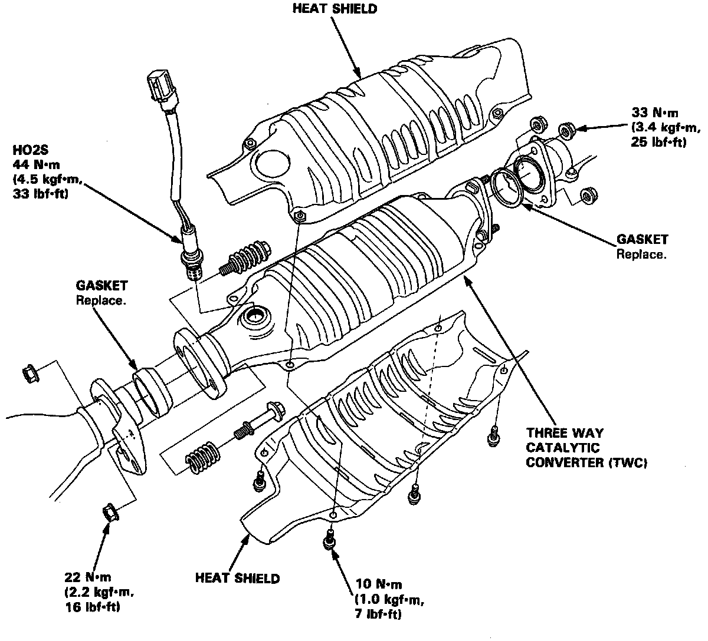

Removal
Three Way Catalytic Converter:

WARNING: Three Way Catalytic Converter is hot. Allow the car to sufficiently cool down before performing removal to avoid burns.
1. Disconnect Heated Oxygen Sensor (HO2S) connector.
2. Loosen 3 exhaust pipe flange bolts.
3. Loosen 2 bolts securing converter to exhaust manifold.
4. Carefully remove converter.
5. Remove the 4 bolts securing the heat shields.
6. If replacing converter, remove HO2S using an appropriate socket.